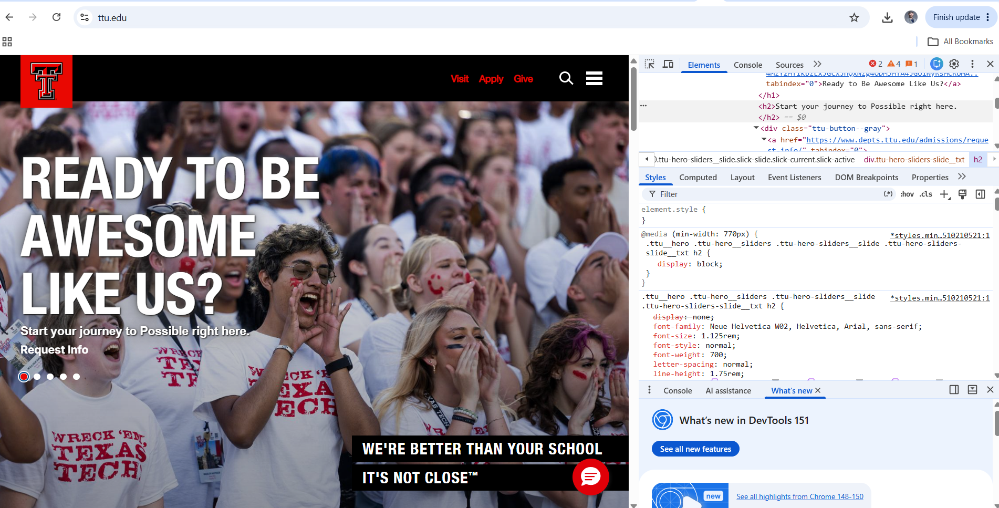

My Dev Tools Vandalism
I used browser developer tools to temporarily "vandalize" a website. Below is a screenshot showing my changes. These edits only appeared on my computer and did not affect the actual website.

What I "Vandalized"
Describe the changes you made to the website using the browser's developer tools. Some potential questions to consider:
- I changed the "From Here, It's Possible" tagline to read "We're better than your school, it's not close." I also changed the "Ready to start your journey" text to read "Ready to become awesome like us?"
- I modified the size of the "Ready to start your journey" and altered the color of the clickable link.
- It was fascinating to experiment with color changes, and the change in text is humorous and shows my support for Texas Tech.
- Some of my changes didn't take, and this required getting granular with each line. Overall, I found the reasons most of my changes didn't work, though some confusion did persist as I tried to edit more complex page elements.
- I wanted the changes to be noticable but not completely alter the webpage, and I wanted to have a little ego in the text.
- With time and experimentation I was able to ascertain how the CSS and HTML worked together for the changes I made.
- This exercise absolutely gave me a better understanding of how to use Dev Tools in building my own sites.